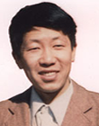

黄润生，男，1956年生，南京大学教授，博士生导师，技术物理研究中心主任；金陵学院信工院机器人实验室主任、机电与自动化综合实验室主任。
黄润生教授的主要研究方向是电力拖动与自动化、电磁调控、原子核技术；曾参与全国电力拖动标准化联合设计、2m钻机电力拖动与控制系统研制、龙门刨可控硅控制系统研制、2代线切割机电一体化设计与研制、程控电镀流水线设计与研制、主持完成逆导可控硅低压电力机车拖动与控制系统设计与制造、主持完成大企业自动供水系统设计制造、研制出磁电阻全固态电流继电器等；主持完成了多项国家自然科学基金项目、“863”项目、总装备部武器装备预研项目、国防预研合同项目等；承担完成了“973”、“二炮预研”、博士点基金等其他项目多项；发表论文和上报国防科技报告（GF报告）100余篇，出版书5本，获原国家教委和军队科技进步奖各1项。
黄润生教授教学经验丰富，先后为本科生、研究生主讲过自动控制理论、电动力学等10多门课程；曾获南京大学教学成果一等奖、国家理科基地名牌课程等。